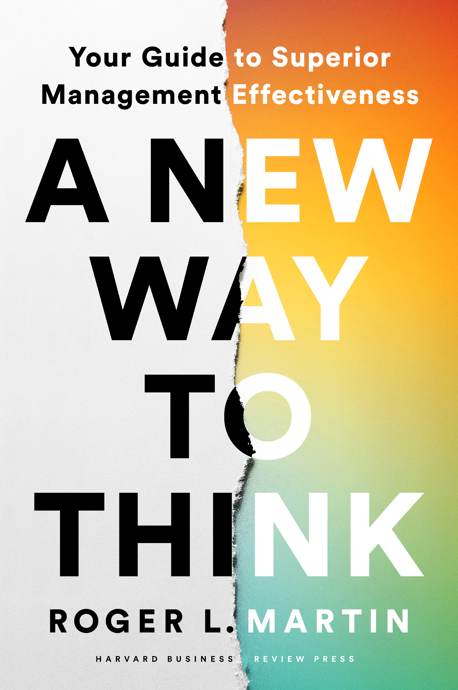
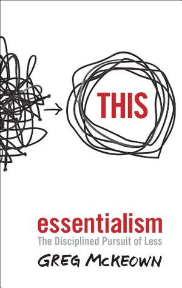
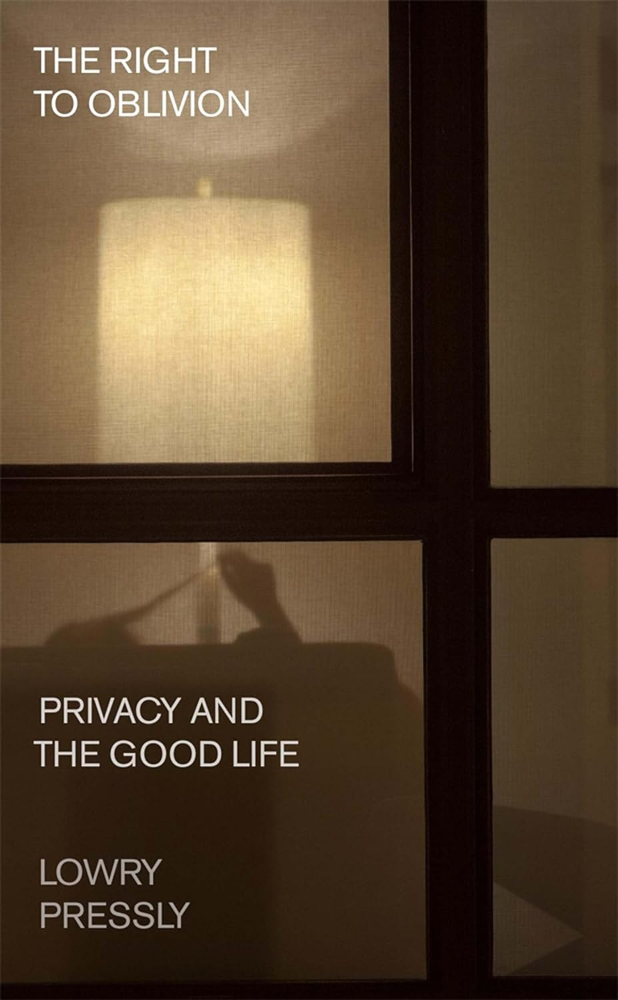

Rediscovering the power and magic of books at work and in life.
About Me
Hey, I’m Fernando—a data analyst from Costa Rica who unexpectedly fell
in love with books. Here I share the ideas that stay with me after
reading, especially ideas about work, technology, decision-making, and
living a more intentional life. This isn’t a traditional review blog;
think of it as a collection of ideas from books that have inspired me.
Book Reviews

A New Way To Think Book Cover
A New Way To Think: Your Guide to Superior Management Effectiveness
Author: Roger L. Martin
Categories: Management, Strategy
Author: Roger L. Martin
Summary: My main takeaway is that good management
depends on questioning familiar assumptions. Instead of following
established frameworks mechanically, leaders should examine the
problem, make clear choices, test their thinking, and adapt based on
what they learn. The book encourages managers to think critically
rather than search for one perfect formula.
Key Ideas
Many traditional management frameworks are treated as universal
truths, but they are better understood as choices that should be
tested against real-world results.
Effective strategy requires deciding **where to play and how to
win**, rather than trying to satisfy every possible customer or
pursue every opportunity.
Planning is not the same as strategy. Plans describe activities
and resources; strategy involves making difficult choices under
uncertainty.
Companies create value by deeply understanding customers—not
simply by asking customers what they want.
Innovation works best when organizations treat new ideas as
hypotheses to test instead of demanding proof before
experimentation.
Organizational culture is shaped more by everyday systems,
incentives, and leadership behavior than by mission statements.
Leaders should integrate opposing ideas to develop a stronger
solution instead of automatically choosing one side.
Management models are tools, not permanent rules. When a model no
longer produces good results, leaders should be willing to replace
it.

Essentialism Book Cover
Essentialism: The Disciplined Pursuit of Less
Author: Greg McKeown
Categories: Management, Productivity
Summary: My main takeaway is that living and working
with intention requires the courage to make choices. Essentialism is
not simply about having fewer possessions or completing fewer tasks—it
is about identifying what matters most and giving it our best time,
energy, and attention. By eliminating distractions and setting clear
boundaries, we create space to make a more meaningful contribution.
Key Ideas
Essentialism is not about doing more things efficiently; it is
about doing **the right things** and eliminating what does not
truly matter.
If we do not consciously choose our priorities, other people will
choose them for us.
Almost everything is unimportant. A small number of activities
produce most of the meaningful results.
Saying “no” is necessary to protect the time and energy required
for our most important work.
Trade-offs are unavoidable. Trying to have or do everything often
prevents us from doing anything exceptionally well.
Creating space to think, reflect, and explore helps us distinguish
important opportunities from distractions.
Rest, sleep, and play are not signs of laziness; they support
creativity, clarity, and sustainable performance.
Clear boundaries make it easier to avoid commitments that conflict
with our priorities.
Essentialists build routines and systems that make important
actions easier and remove unnecessary friction.
Progress can come from small, consistent wins rather than dramatic
changes.

The Right to Oblivion Book Cover
The Right to Oblivion: Privacy and the Good Life
Author: Lowry Pressly
Categories: Privacy, Freedom, Lifestyle
Summary: My main takeaway is that privacy is not
simply about hiding information. It gives us the freedom to step away
from judgment, experiment with new possibilities, and change without
being permanently defined by our past. In a world where technology
makes almost everything visible and memorable, protecting moments of
oblivion may be essential to living freely and authentically.
Key Ideas
Privacy is more than controlling personal information; it is the
ability to temporarily withdraw from the attention and
expectations of others. - A good life requires moments of
**oblivion**—spaces where we are not constantly observed,
evaluated, or asked to explain ourselves.
When everything we do is recorded and remembered, past actions can
become permanently attached to our identities.
Constant visibility encourages us to perform for others instead of
exploring who we might become.
Privacy gives people room to experiment, make mistakes, change
their minds, and develop new versions of themselves.
Digital technologies increasingly make people identifiable,
measurable, and predictable, even when no individual piece of
information seems especially sensitive.
Surveillance can limit freedom without directly prohibiting
behavior. Knowing that we might be watched is often enough to
change how we act.
Complete transparency is not necessarily a social good. Some
degree of secrecy and anonymity is essential for autonomy,
intimacy, and creativity.
Protecting privacy requires more than individual choices or
settings; it also requires institutions and technologies designed
to preserve spaces beyond observation.
The right to oblivion is ultimately the right to be more than the
data, history, and categories used to describe us.
Let’s Connect
Have a book recommendation, a different perspective, or an idea you’d
like to discuss? I’d love to hear from you.
You can also find me on
LinkedIn
, where I share thoughts about analytics, technology, work, and
learning.